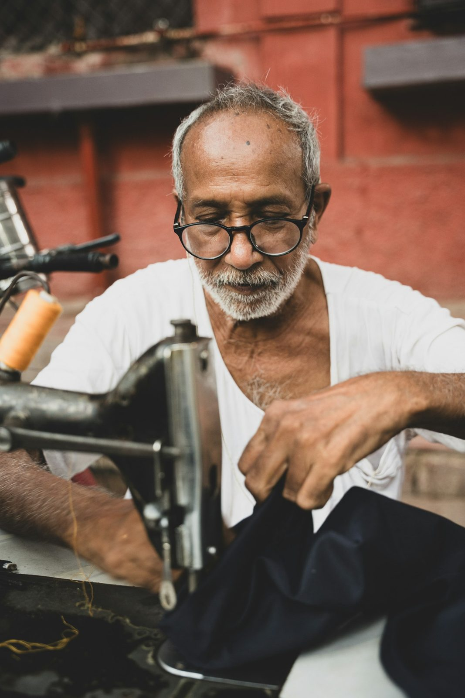

The Tailor
A small shop on Jericho Turnpike, run by a tailor who still does it by hand.
Arcenio has spent years at the machine, and it shows in the work. Regulars describe the same thing: honest opinions, reasonable prices, and alterations a dry cleaner would call impossible handled like they're routine.
He works with men and women, in English and Spanish, on everything from a first custom suit to a ball gown that has to hang perfectly. No pretense, no runaround — just a real tailor who gets it right.
"Alterations that at a cleaners would be considered mission impossible, Arcenio would consider it done."
— Verified Google review